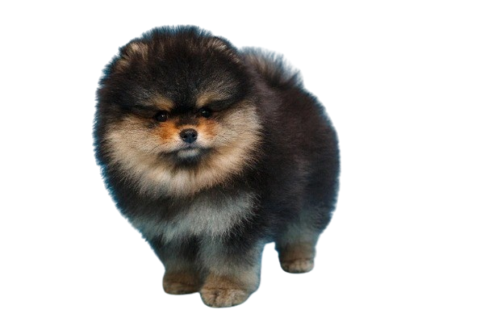

FUN FACTS
Did You know that Pomeranians breed has been made popular by a number of royal owners since the 18th century. Queen Victoria owned a particularly small Pomeranian, and consequently, the smaller variety became universally popular.
The Pomeranian, often affectionately called a "Pom," is a small yet lively and intelligent dog breed. This toy breed is known for its fluffy double coat, fox-like face, and spirited personality.
POMERANIAN
HISTORY
The Pomeranian originated from large Arctic Spitz-type dogs like the Samoyed and Norwegian Elkhound, bred for herding, sledding, and guarding. Named after Pomerania (now part of Germany and Poland), they were selectively bred smaller. Initially weighing up to 30 pounds, they became companion animals, especially in England. Their popularity surged in the 19th century when Queen Victoria adopted a smaller one, sparking the trend for toy-sized dogs. Officially recognized in the late 19th and early 20th centuries, Pomeranians evolved into the fluffy, lively companions we know today.

Health Care:
Pomeranians are generally healthy and live 12–16 years, but they can face specific issues. Common concerns include dental problems from overcrowded teeth, luxating patella (dislocated kneecap), tracheal collapse (weak windpipe), and, in puppies, hypoglycemia (low blood sugar). Regular vet visits, dental care, a balanced diet, and using a harness instead of a collar can help keep them healthy and happy.
Personality and Behavior:
Lively and outgoing, Pomeranians are energetic, curious, and intelligent, making them quick learners but sometimes stubborn. Despite their small size, they have bold personalities and often bark, making them excellent watchdogs. Loyal and affectionate, they bond closely with families but may be reserved with strangers, thriving in homes that meet their social and mental needs.
Physical Characteristics:
Pomeranians are toy-sized, weighing 3–7 pounds and standing 6–7 inches tall. They have a dense double coat that creates their iconic fluffy look, available in colors like orange, black, cream, sable, and blue, with some showing parti-color patterns. Their fox-like faces feature dark almond eyes, erect ears, and pointed muzzles, though some have softer, rounder "baby doll" faces.